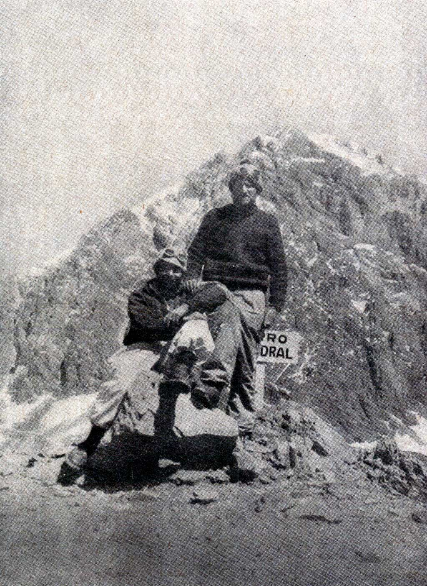
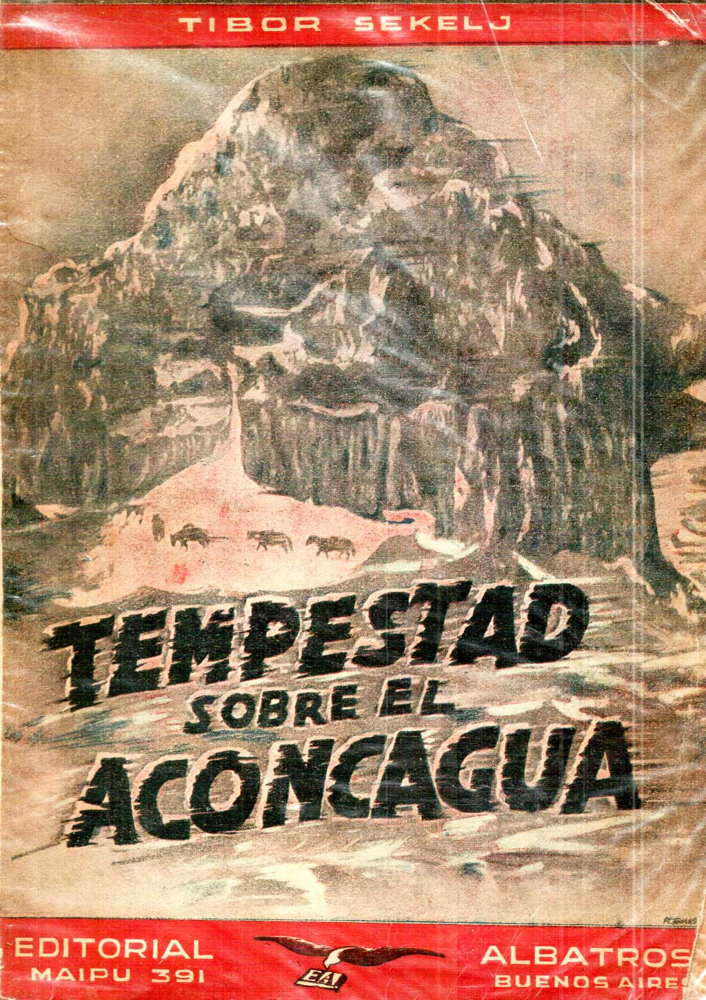
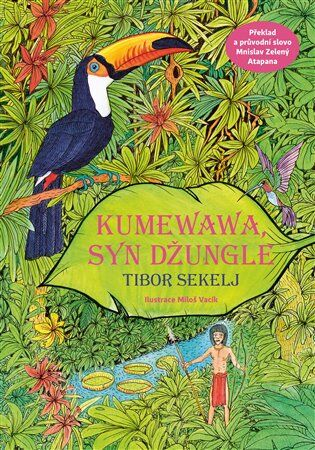

Tibor
Sekelj
Človek, ki ga je gnala radovednost – raziskovalec, pisatelj, popotnik in esperantist.
Opomba za predavatelja
Začni z vprašanjem: Koliko ljudi poznamo, ki so bili hkrati alpinisti, raziskovalci, pisatelji, muzealci in zagovorniki mednarodnega jezika?
Več kot popotnik
Tibor Sekelj (1912–1988) je bil novinar, raziskovalec, etnograf, pisatelj, muzealec in eden vidnejših esperantistov svojega časa.
Njegovo življenje je bilo zaznamovano s stalnimi selitvami in raziskovanjem že od zgodnjega otroštva, kar ga je oblikovalo v svetovljana in poliglota.

Opomba za predavatelja
Njegova življenjska pot ni bila vezana na eno državo. Poudari, da se je njegova kozmopolitska narava začela z zgodnjimi družinskimi selitvami po Evropi.
Oče živinozdravnik in prvih deset let v Ceneju
Oče Tiborja Sekelja je bil živinozdravnik, družina se je često selila.
Selitev v Cenei
Le nekaj mesecev po Tiborjevem rojstvu se je družina naselila v mestu Cenei v današnji Romuniji, kjer je Tibor prebival prvih deset let svojega življenja.
Jezikovno okolje
Domač jezik je bil madžarščina, na cesti so govorili tudi nemško narečje.
Opomba za predavatelja
Že od prvih let v Ceneju je odraščal med več jeziki in narečji, kar je močno vplivalo na njegovo kasnejšo jezikovno radovednost.
Od Kikinde in Nikšića do Zagreba
Kikinda (1922)
Družina se je preselila leta 1922 v Kikindo (Кикинда), Srbija, Jugoslavija, kjer se je Tibor naučil srbohrvaščine; tedaj se je učil francoščine in celo poučeval svoje vrstnike tako, da je bil nekaj lekcij pred njimi. Ta jezik je izpopolnil s francosko učiteljico; odtlej se je približno vsako četrto leto naučil novega jezika. V Kikindi je končal osnovno šolo.
Nikšić (1926) in Zagreb (1929–1937)
Družina se je leta 1926 preselila v Nikšić (Никшић), Črna gora, kjer je končal gimnazijo. Že v srednji šoli je vzljubil plezanje po gorah in peš je prehodil vso Črno goro. V letu 1929 se je vpisal na univerzo, da bi študiral pravo v Zagrebu (Hrvaška), kjer je leta 1933 diplomiral kot eden izmed treh najmlajših študentov. V teh letih se je izučil tudi slikanja, kiparjenja in novinarskega dela, s katerim se je začel preživljati. Med drugim se je naučil mednarodnega jezika esperanta. V letu 1937 je začel delovati v Zagrebu kot filmski dramaturg.
Opomba za predavatelja
Poudari zgodnje učenje jezikov v Kikindi, ljubezen do gora v Nikšiću ter širok ustvarjalni in novinarski razmah v Zagrebu (pravo, likovna umetnost, novinarstvo, esperanto in filmska dramaturgija leta 1937).
Leta 1939: odhod v Argentino
V Buenos Aires je odšel kot novinar. Tam je ostal približno petnajst let – in njegovo življenje se je spremenilo v niz odprav, raziskovanj in knjig.
Buenos Aires
Novinarsko delo ter študij etnologije in arheologije.
Let v Južni Ameriki
Potovanja po Argentini, Braziliji, Boliviji in drugih državah celine.
Opomba za predavatelja
Sekelj je v Argentino odšel tik pred začetkom druge svetovne vojne. Načrtovan novinarski odhod se je spremenil v dolgo obdobje raziskovanja in potovanj.
Zgodovinska odprava na Aconcagvo (1944)
Vzpon na najvišji vrh Južne Amerike (6.961 m) in boj s silovitim gorskim viharjem.
Vzpon brez predhodnih izkušenj
Leta 1944 se je Sekelj pridružil odpravi pod vodstvom švicarskega alpinista Georga Linka. Kljub temu da prej ni imel večjih alpinističnih izkušenj, je 13. februarja 1944 skupaj z Avstrijcem Zechnerjem in Italijanom Bertonejem stopil na vrh najvišje gore Južne Amerike.
Tragedija in reševalna akcija
Odpravo je zajel silovit snežni vihar, v katerem so umrli štirje od šestih udeležencev. Enajst mesecev pozneje je Sekelj na pobudo argentinske vojske sodeloval še v drugi odpravi, na kateri so našli trupla preminulih plezalcev.

Sekelj/Sekelj_z_Zechnerjem.jpg glede na to HTML-datoteko.
Najvišji vrh Južne Amerike v argentinskih Andih.
Opomba za predavatelja
• 13. februar 1944: Sekelj, Zechner in Bertone dosežejo vrh v okviru odprave, ki jo je vodil Georg Link.
• Vihar in kasnejša odprava: Od šestih udeležencev so štirje izgubili življenje; enajst mesecev kasneje se je Sekelj na pobudo argentinske vojske vrnil še v iskalni/reševalni odpravi.
Knjiga Vihar nad Aconcaguo
Knjiga Vihar nad Aconcaguo (v španščini Tempestad sobre el Aconcagua) je Sekeljev knjižni prvenec, v katerem je opisal dogajanje na andski odpravi.
Od gorske drame do knjige
Neposredna izkušnja nevarnosti, mraza in izgube v visokogorju je prerasla v pretresljivo pripoved o vztrajnosti in soočanju z naravnimi silami.
Slovenski izdaja in pomen
V slovenščini je izšla pri Mladinski knjigi leta 1958 in velja za klasiko gorniške ter potopisne literature.
Opomba za predavatelja
Knjiga Vihar nad Aconcaguo (šp. Tempestad sobre el Aconcagua) je bila Sekeljev prvenec; slovenski prevod pri Mladinski knjigi (1958) je pomembno zaznamoval tudi domače bralstvo gorniške in potopisne literature.
Ne samo gore – tudi življenje v pragozdu
Sekelj je raziskoval odročne dele Južne Amerike in se srečeval z domorodnimi skupnostmi, med drugim v Braziliji.
Raziskovanje
Potoval je po območjih Mato Grossa, bolivijskih gozdovih in amazonskem svetu.
Srečanja in opazovanje
Zanimalo ga je vsakdanje življenje, običaji in načini preživetja ljudi, ki jih je srečeval.
Njegove izkušnje so navdihnile več potopisnih in mladinskih knjig.
Opomba za predavatelja
Pri pripovedovanju uporabljaj spoštljiv izraz »domorodne skupnosti«. Sekeljeve knjige so nastale v času, ko so bili opisi teh skupnosti pogosto obarvani z drugačnimi predstavami kot danes; smiselno je ločiti njegove osebne vtise od sodobne antropološke razlage.
Po vrnitvi se potovanja niso končala
Leta 1954 se je vrnil v Jugoslavijo, vendar je še naprej potoval po Aziji, Afriki in Oceaniji.
Opomba za predavatelja
Letnice so orientacijske in ne pomenijo, da je bila to njegova edina pot v posamezno območje. Pri Avstraliji in Papui Novi Gvineji je posebej zanimivo, da je zbiral tudi predmete, ki so pozneje prišli v muzejske zbirke.
Popotnik, ki je zbiral tudi predmete
Na potovanju po Avstraliji in Papui Novi Gvineji je zbral obsežno zbirko predmetov, ki se danes hranijo v muzejih v Senti, Subotici in Zagrebu.
Zakaj je to pomembno?
Njegova potovanja niso pustila le knjig in fotografij. Del materialne kulture, s katero se je srečal, je postal del muzejskih zbirk in je danes dostopen za proučevanje.
Etnografski muzej v Zagrebu je leta 2022 pripravil razstavo »Tibor Sekelj u Okeaniji«.
Opomba za predavatelja
To je dober trenutek za pokazati fotografijo predmeta ali muzejske zbirke. Poudari, da je zbiranje predmetov danes treba razumeti tudi v kontekstu vprašanj lastništva, okoliščin pridobitve in spoštovanja skupnosti izvora.
Jezik kot most med ljudmi
Esperanto se je naučil leta 1930 v Zagrebu. V njem je videl praktično sredstvo za sporazumevanje med ljudmi različnih jezikov in kultur.
Avtor v esperantu
Pomemben del njegovega literarnega opusa je nastal neposredno v esperantu.
Mednarodno gibanje
Bil je dejaven v svetovnem esperantskem gibanju, predaval, pisal in spodbujal mednarodna srečanja.
Opomba za predavatelja
Po podatku, predstavljenem na okrogli mizi v Mariboru ob njegovi 100. obletnici rojstva, je bila približno tretjina njegovih del prvotno napisana v esperantu. To je posebej zanimivo za esperantsko občinstvo.
Od lokalnih govorov do mednarodnega jezika
Sekelj ni videl esperanta kot zamenjave za materne in lokalne jezike, temveč kot skupni vmesni člen pri stiku različnih svetov.
Praktična raba
Omogočal je hitrejši stik s sogovorniki po svetu brez vedno vmesnega prevajanja prek velikih jezikov.
Literarni izraz
V esperantu je pisal potopise, prozo in prispevke za mednarodne revije.
Spomin in skupnost
Njegovo delo še danes povezuje esperantska društva, raziskovalce in bralce.
Opomba za predavatelja
Če predavaš skupini, ki se zanima za jezike ali esperanto, lahko odpreš kratko razpravo o tem, kako se mednarodni pomožni jeziki ujemajo s sodobno večjezičnostjo.
Potovanja, ki so postala knjige




Njegova dela so izhajala v več jezikih – med drugim v španščini, esperantu in različnih jezikih jugoslovanskega prostora.
Opomba za predavatelja
Na naslovnicah so lepo vidni različni vidiki njegovega pisanja: gorniška drama (Tempestad sobre el Aconcagua), potopisi in esperantska književnost (Nepalo malfermas la Pordon, Mondo de travivajoj, Kolektanto de ĉielarkoj) ter pripovedi za mlajše bralce (Kumewawa, syn džungle).
Od raziskovalca do direktorja muzeja
Leta 1972 je postal direktor Mestnega muzeja v Subotici. Zanimalo ga je, kako naj muzeji predstavljajo različne kulture in kako lahko prispevajo k boljšemu razumevanju med ljudmi.
Magistrsko delo o prihodnosti etnografskih muzejev
Njegovo delo je nosilo naslov Etnografski muzeji za budućnost – muzeji naj ne bodo zgolj skladišča predmetov, temveč prostor razumevanja kultur.
Opomba za predavatelja
Ta del pokaže, da Sekelj ni bil samo pustolovec. Razmišljal je tudi o tem, kako znanje in predmete predstaviti javnosti.
Potovanja zanj niso bila samo premikanje iz kraja v kraj. Želel je razumeti ljudi – njihove navade, razmišljanje in način življenja.
Opomba za predavatelja
To je lahko sklepni poudarek predavanja: njegova radovednost ni bila usmerjena le v kraje, ampak predvsem v ljudi.
Naj spregovori tudi slika
Za predavanje priporočam kratek odlomek ali dva. Povezave odpri in preveri vnaprej, saj se dostopnost posnetkov lahko spremeni.
1 · Arhivski posnetek – Aconcagua
Pred uporabo preveri, ali povezava deluje in ali je na posnetku res Sekelj osebno.
2 · Spomenka Štimec o Tiboru Sekelju
Predavanje v esperantu; uporabno za dodatno ozadje.
3 · Dokumentarni film Putevima Tibora Sekelja
Dokumentarni film iz leta 2012; stran vsebuje podatke o filmu, ne nujno povezave za ogled.
Zakaj se ga še spominjamo?
Ker je združil pustolovščino, raziskovanje, pisanje, zanimanje za druge kulture in prepričanje, da se ljudje lahko sporazumevamo onkraj jezikovnih meja.
Raziskovalec
Iskal je neznano in se odpravljal daleč od ustaljenih poti.
Pisatelj
Doživetja je spremenil v knjige, ki so dosegle bralce v številnih jezikih.
Esperantist
Verjel je v mednarodno sporazumevanje in prijateljstvo.
Muzealec
Skrbel je, da predmeti in zgodbe različnih kultur ostanejo ohranjeni.
Tibor Sekelj · 14. februar 1912 – 20. september 1988 (v virih se datum smrti ponekod razlikuje).
Viri
- Wikipedija – Tibor Sekelj (sl)
- Hrvatska enciklopedija – Tibor Sekelj
- Etnografski muzej Zagreb – Tibor Sekelj
- Okrogla miza o Tiboru Sekelju v Mariboru (2012)
- Etnografski muzej Zagreb – Tibor Sekelj u Okeaniji
- Portret iz leta 1983 – Wikimedia Commons
Predstavitev je izhodišče za predavanje. Pri navajanju posameznih podrobnosti daj prednost muzejskim in enciklopedičnim virom; pri datumih se v nekaterih virih pojavljajo manjša odstopanja.